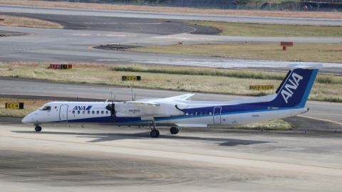

AW
AW
Company
Airline based in Japan. Headquarters: Ota City, Tokyo. Founded 1 October 2010. Pilot bases include Tokyo Haneda (HND), Osaka Itami (ITM) and Nagoya Chubu (NGO). Fleet includes the B737-800 and DHC-8-400.
Company details2 facts · Fleet · Sources
- Founded
- 1 October 2010
- Headquarters
- Ota City, Tokyo
FleetTypes listed by the airline
- B737-800
- DHC-8-400